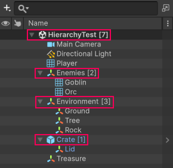
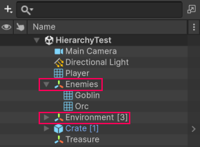
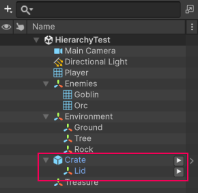

Add your own elements to the rows of the Hierarchy window to display information at a glance or to run an action on a specific item. For example, you can display how many child GameObjects a collapsed GameObject has, or add a button that locates the prefab asset of a prefab instance in the Project window.
Each row has containers that you can add visual elementsA node of a visual tree that instantiates or derives from the C# VisualElement class. You can style the look, define the behaviour, and display it on screen as part of the UI. More info
See in Glossary to. LeftCustomContainer is next to the name of the item, and RightCustomContainer is at the end of the row. To change the style of a row instead, refer to Highlight GameObjects in the Hierarchy window.
Before you begin, complete the following steps:
Assets/Editor/HierarchyExtensions folder. The scripts on this page load their style sheets from this folder.The following script adds a label next to the name of each item that has child items. The label displays the number of direct child items.
To display the number of child items of each item:
In the Assets/Editor/HierarchyExtensions folder, right-click and select Create > Scripting > Empty C# Script.
Name the script ChildCount.cs.
Open the script and replace its contents with the following code:
using Unity.Hierarchy;
using Unity.Hierarchy.Editor;
using UnityEditor;
using UnityEngine.UIElements;
public static class ChildCount
{
const string k_ChildCountUssClassName = "hierarchy-child-count";
[InitializeOnLoadMethod]
static void Initialize()
{
HierarchyWindow.BindViewItem += OnBindViewItem;
}
static void OnBindViewItem(HierarchyWindow window, HierarchyView view, HierarchyViewItem item)
{
int childCount = view.ViewModel.GetChildrenCount(item.Node);
// Rows are reused, so check whether this row already has a label from an earlier bind.
Label label = item.LeftCustomContainer.Q<Label>(className: k_ChildCountUssClassName);
if (childCount > 0)
{
if (label == null)
{
label = new Label();
label.AddToClassList(k_ChildCountUssClassName);
item.LeftCustomContainer.Add(label);
}
label.text = $"[{childCount}]";
label.style.display = DisplayStyle.Flex;
}
else if (label != null)
{
// Hide the label so that a reused row doesn't display the count of another item.
label.style.display = DisplayStyle.None;
}
}
}
The script contains the following parts:
HierarchyViewModel class, contains the state of each node in the view. GetChildrenCount returns the number of direct child nodes of a node.LeftCustomContainer for the label and creates one only if the row doesn’t have one.Save the script.
Each item that has child items displays the number of its child items in square brackets after its name.

When an item is expanded, the Hierarchy window already displays its child items, so the count isn’t as useful. The view model stores the state of each node as flags, represented by the HierarchyNodeFlags enum. For example, a node that’s expanded has the Expanded flag.
To display the count only for collapsed items:
Replace the contents of ChildCount.cs with the following code:
using Unity.Hierarchy;
using Unity.Hierarchy.Editor;
using UnityEditor;
using UnityEngine.UIElements;
public static class ChildCount
{
const string k_ChildCountUssClassName = "hierarchy-child-count";
[InitializeOnLoadMethod]
static void Initialize()
{
HierarchyWindow.BindViewItem += OnBindViewItem;
}
static void OnBindViewItem(HierarchyWindow window, HierarchyView view, HierarchyViewItem item)
{
HierarchyNode node = item.Node;
int childCount = view.ViewModel.GetChildrenCount(node);
Label label = item.LeftCustomContainer.Q<Label>(className: k_ChildCountUssClassName);
// Display the count only when the item has children and is collapsed.
bool isCollapsed = view.ViewModel.DoesNotHaveFlags(node, HierarchyNodeFlags.Expanded);
if (childCount > 0 && isCollapsed)
{
if (label == null)
{
label = new Label();
label.AddToClassList(k_ChildCountUssClassName);
item.LeftCustomContainer.Add(label);
}
label.text = $"[{childCount}]";
label.style.display = DisplayStyle.Flex;
}
else if (label != null)
{
label.style.display = DisplayStyle.None;
}
}
}
DoesNotHaveFlags returns true if the node doesn’t have the Expanded flag. When you expand or collapse an item, the Unity Editor unbinds and binds the visible rows again, so BindViewItem runs again and the label updates.
Save the script.
In the Hierarchy window, expand and collapse an item that has child items.
The count appears when you collapse the item and disappears when you expand it.

You can add interactive elements, such as buttons, to a row. The following script adds a button to each GameObject in a prefab instance. When you select the button, the Editor highlights the prefab asset in the Project window.
To add a button to the GameObjects in prefab instances:
In the Assets/Editor/HierarchyExtensions folder, right-click and select Create > UI Toolkit > Style Sheet (USS).
Name the style sheet PrefabPingButton.uss.
Open the style sheet and replace its contents with the following code:
.prefab-ping-button {
width: 16px;
height: 16px;
font-size: 8px;
padding-bottom: 4px;
margin-left: 2px;
margin-right: 2px;
-unity-text-align: middle-center;
}
In the same folder, right-click and select Create > Scripting > Empty C# Script.
Name the script PrefabPingButton.cs.
Open the script and replace its contents with the following code:
using Unity.Hierarchy;
using Unity.Hierarchy.Editor;
using UnityEditor;
using UnityEngine;
using UnityEngine.UIElements;
public static class PrefabPingButton
{
const string k_StyleSheetPath = "Assets/Editor/HierarchyExtensions/PrefabPingButton.uss";
const string k_PingButtonUssClassName = "prefab-ping-button";
[InitializeOnLoadMethod]
static void Initialize()
{
HierarchyWindow.BindView += OnBindView;
HierarchyWindow.BindViewItem += OnBindViewItem;
HierarchyWindow.UnbindViewItem += OnUnbindViewItem;
}
static void OnBindView(HierarchyWindow window, HierarchyView view)
{
StyleSheet styleSheet = AssetDatabase.LoadAssetAtPath<StyleSheet>(k_StyleSheetPath);
view.styleSheets.Add(styleSheet);
}
static void OnBindViewItem(HierarchyWindow window, HierarchyView view, HierarchyViewItem item)
{
if (item.Handler is not HierarchyGameObjectHandler handler)
{
return;
}
GameObject gameObject = handler.GetGameObject(item.Node);
if (gameObject == null || !PrefabUtility.IsPartOfPrefabInstance(gameObject))
{
return;
}
// Find the prefab asset of the outermost prefab instance.
GameObject prefabRoot = PrefabUtility.GetOutermostPrefabInstanceRoot(gameObject);
GameObject prefabAsset = PrefabUtility.GetCorrespondingObjectFromSource(prefabRoot);
if (prefabAsset == null)
{
return;
}
// Highlight the prefab asset in the Project window when you select the button.
Button pingButton = new Button(() => EditorGUIUtility.PingObject(prefabAsset))
{
text = "▶",
tooltip = "Ping Prefab Asset in Project Window"
};
pingButton.AddToClassList(k_PingButtonUssClassName);
item.RightCustomContainer.Add(pingButton);
}
// Runs when a row stops displaying an item, before the Hierarchy window reuses the row.
static void OnUnbindViewItem(HierarchyWindow window, HierarchyView view, HierarchyViewItem item)
{
item.RightCustomContainer.Query<Button>(className: k_PingButtonUssClassName)
.ForEach(button => button.RemoveFromHierarchy());
}
}
The script contains the following parts:
OnBindViewItem uses PrefabUtility to find the prefab asset of the outermost prefab instance, then adds a button to RightCustomContainer. The button calls EditorGUIUtility.PingObject to highlight the asset.OnUnbindViewItem runs when the row stops displaying the item. It removes the button, so the button doesn’t appear on the next item that the row displays.This script creates the button each time the row displays an item, and removes it in UnbindViewItem. ChildCount.cs uses a different approach: it creates its label the first time a row needs it, then keeps the label and only updates or hides it. Creating and removing elements is simpler, because every row starts empty. Keeping and reusing elements creates fewer new elements, which helps because the Hierarchy window binds rows often. For example, it binds every visible row again each time you expand or collapse an item.
Save the script.
Select the button on a prefab instance in the Hierarchy window.
The Project window displays the prefab asset and highlights it.

Note: The button is hidden if the Hierarchy window is too narrow. If you don’t see the button, widen the Hierarchy window.
HierarchyViewItemHierarchyViewModel